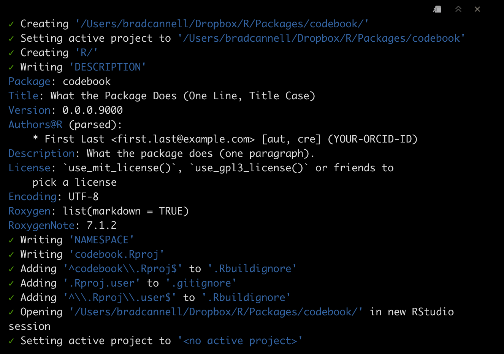
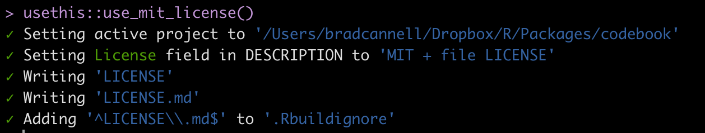
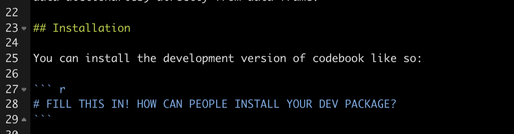
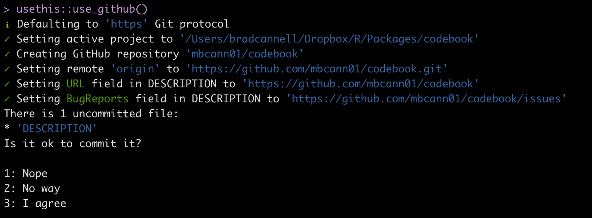

usethis::create_package("/Users/bradcannell/Dropbox/R/Packages/codebook")4 Packages: Quick Start
4.1 ⭐️ Overview
This chapter is my quick start guide for creating packages. I’m going to walk through the process I used to create the codebook package, plus add some extra notes that have been helpful along the way when creating other packages.
This is not meant to be a comprehensive guide to creating packages. Hadley Wickham and Jenny Bryan’s R Packages book already exists for that purpose. This is supposed to just be a quick overview and some notes to remember in the future.
4.2 🌎 Useful websites
4.3 Quick Process
Create new project/package directory with
usethis::create_package(). Restart.Add license with
usethis::use_mit_license().Add README with
usethis::use_readme_rmd()anddevtools::build_readme().Add Git with
usethis::use_git(). Restart.Connect to GitHub with
usethis::use_github().Completing a version of the package and (optionally) submitting to CRAN.
4.4 Before creating the package
Give the package a new (Hadley’s naming strategies)
4.5 Step 1: Create the package project
Call create_package() to initialize a new package in a directory on your computer (and create the directory, if necessary).
The function will do all of this:

4.6 Step 2: Add a NOTES file
The R Packages book doesn’t mention creating a NOTES file, but it’s something I like to do. I use the notes file to help me remember little things related to the development of the package that aren’t meant to be shared publicly.
- Create a new text file, add the following template to the top of the file, and fill it out appropriately.
# =============================================================================
# codebook notes
# =============================================================================
Use NOTES for notes, but not tasks. Why or how, but not what.
...
Submission Notes:
-----------------
* Useful website: http://r-pkgs.had.co.nz/release.html
* Update README before submission. It should roughly match the examples in the roxygen documentation.
- Update README.Rmd, not README.md.
- Knit README.Rmd after making changes. This will automatically update README.md
* Update vignettes using devtools::document()
* Update news.md. Here's dplyr's (https://raw.githubusercontent.com/tidyverse/dplyr/master/NEWS.md)
* If you were on a development branch, merge with main branch.
* Use devtools::check()
* Use devtools::check_win_devel() to test the package on Windows
* Update cran-comments.
- If this is a resubmission, add a bulleted list of changes made under ## Resubmission.
* Submit with devtools::release()
* After the package is accepted, do this stuff: http://r-pkgs.had.co.nz/release.html#post-releaseSave as
NOTESAdd to gitignore.
usethis::use_git_ignore("NOTES")- Add to buildignore.
usethis::use_build_ignore("NOTES")4.7 Step 3: Add license
usethis::use_mit_license()The function will do all of this:

You will still need to open the new LICENSE file and change COPYRIGHT HOLDER: to “Brad Cannell”. You can also look in the templates folder for more elaborate licenses.
4.8 Step 4: Modify the description file
Open the description file and make some changes.
Here is a minimal example from codebook:
Package: codebook
Title: Create Codebooks From Data Frames
Version: 0.0.0.9000
Authors@R: person("Brad", "Cannell", email = "brad.cannell@gmail.com",
role = c("aut", "cre", "cph"))
Maintainer: Brad Cannell <brad.cannell@gmail.com>
Description: The codebook package is intended to make it easy for users to
create codebooks (i.e. data dictionaries) directly from data frame.
License: MIT + file LICENSE
Encoding: UTF-8
Roxygen: list(markdown = TRUE)
RoxygenNote: 7.1.2Here is a slightly more elaborate example from meantables:
Package: meantables
Type: Package
Title: Make Quick Descriptive Tables for Continuous Variables
Description: Quickly make tables of descriptive statistics (i.e., counts,
means, confidence intervals) for continuous variables. This
package is designed to work in a Tidyverse pipeline, and consideration
has been given to get results from R to 'Microsoft Word' ® with minimal pain.
Version: 0.1.2
Authors@R: person("Brad", "Cannell", email = "brad.cannell@gmail.com",
role = c("aut", "cre", "cph"))
Maintainer: Brad Cannell <brad.cannell@gmail.com>
License: MIT + file LICENSE
Encoding: UTF-8
Suggests:
knitr,
rmarkdown,
testthat
VignetteBuilder: knitr
RoxygenNote: 7.1.2
Imports:
dplyr,
tibble,
rlang,
stringrRemember that Title Case is required for the Title
Do Not use
library(package)in R scripts - instead add package dependencies to theImportsorRemotesfield in the DESCRIPTION. Do uselibrary(package)in vignette .Rmd files, and DO NOT add these package dependencies to the DESCRIPTIONIf we already added R scripts to the package directory, we need to open them now and make sure to remove all the
library()functions.When adding CRAN packages to imports, you must first make sure they are installed.
Instructions for installing dependencies from sources other than CRAN are given here.
4.9 Step 5: Add README
In R Packages, Chapter 2: The Whole Game, Hadley and Jenny basically create all the package code before connecting their project to their remote repository on GitHub. I actually like to connect my project to GitHub before I write any code. I do this for several reasons, one of which is that I can start using GitHub’s issues and project boards right away to take notes and plan package development.
And, I like to create the README file before I initialize Git or connect with GitHub. That’s what we will do in this step.
usethis::use_readme_rmd()I generally just copy the Description section from the
DESCRIPTIONfile and use it replace the “The goal of codebook is to …” sentence that thatuse_readme_rmd()creates by default.Comment out all of the code chunks that
use_readme_rmd()creates by default.Add installation instructions to README. Although we haven’t created the repository yet, we know what it’s going to be called.
The README file already contains the following lines:

We just need to replace it with:
Make sure to set the eval=FALSE code chunk option.
# install.packages("devtools")
devtools::install_github("brad-cannell/codebook")Just replace “codebook” in the path above with the name of the repository for the package project you are currently working on.
You can leave everything else as-is for now.
Render README
Don’t forget to render it to make README.md! The pre-commit hook should remind you if you try to commit README.Rmd, but not README.md, and also when README.md appears to be out-of-date.
The very best way to render README.Rmd is with build_readme(), because it takes care to render with the most current version of your package, i.e. it installs a temporary copy from the current source.
devtools::build_readme()4.10 Step 6: Add Git
usethis::use_git()- Go ahead and commit all the files in the directory so far, and agree to restart R.
4.11 Step 7: Connect to GitHub
Caution
So far, using this method will add the repo to my personal account (mbcann01), not to my organization. You can either:
Create the repo manually on GitHub first, then follow GitHub’s instructions for syncing.
After you create the repo on mbcann01, transfer ownership to brad-cannell in the Settings menu.
usethis::use_github()The function will do all of this:

- Go ahead and agree to commit.
4.11.1 Setting up GitHub
I added a page on the templates package wiki about setting up the issue tags, planner project boards, etc. That seems more durable writing them here.
4.12 Step 8: Adding content to the package
At this point, we have an (empty) working package, which can be downloaded from our GitHub repository. Now, we just need to add the functions, data, and documentation that will make it actually worth using.
4.12.1 Working with R scripts
Don’t write or alter your functions in the console as you would in a typical interactive session. If you do, it’s easy for the version you’re using interactively and the version you are actually including in your package to get out of sync. Instead, load the package.
Click the build tab > More > Load All, or
devtools::load_all, or shift + cmd + L
4.12.2 Adding help pages to functions
Help pages are contained in .Rd files saved in the man folder. It’s best practice to use roxygen with your script files to automatically generate the .Rd files. Doing so helps to keep your scripts and your help pages in sync.
To use roxygen:
Make sure the R script you want to document is active.
Click Project Options > Build Tools > Generate documentation with Roxygen
Place your cursor in the function you want to document
Insert a Roxygen skeleton with the keyboard shortcut cmd + alt + shift + R
After you’ve filled in the skeleton click Build > More > Document, or use the keyboard shortcut shift + cmd + D. RStudio will then automatically generate the help pages in your man folder.
Click the build tab > More > Load All, or
devtools::load_all, or shift + cmd + LCheck your help page by typing ?function_name in the console.
4.12.3 Example roxygen header
#' @title Compact Table of Summary Statistics
#'
#' @description Based on Stata's "tabstat" command. "tabstat displays summary
#' statistics for a series of numeric variables in one table. It allows you
#' to specify the list of statistics to be displayed. Statistics can be
#' calculated (conditioned on) another variable. tabstat allows substantial
#' flexibility in terms of the statistics presented and the format of the
#' table" (Stata, 2016).
#'
#' @param x A continuous variable.
#' @param digits Rounds the values returned to the specified number of decimal
#' places (default 3).
#' @param stats Return specified statistics. Options include:
#' \describe{
#' \item{n}{Count of nonmissing values of x}
#' \item{nmiss}{Count of missing values of x}
#' \item{ci}{95 percent confidence interval for the mean of x}
#' \item{sum}{Sum of x}
#' \item{max}{Maximum value of x}
#' \item{min}{Minimum value of x}
#' \item{range}{(Maximum value of x) - (minimum value of x)}
#' \item{sd}{Standard deviation of x}
#' \item{var}{Variance of x}
#' \item{cv}{Coefficient of variation (sd / mean) of x}
#' \item{sem}{Standard error of the mean of x}
#' \item{skew}{Skewness of x}
#' \item{kurt}{Kurtosis of x}
#' \item{p1}{1st percentile of x}
#' \item{p5}{5th percentile of x}
#' \item{p10}{10th percentile of x}
#' \item{p25}{25th percentile of x}
#' \item{p50}{Median value of x}
#' \item{median}{Median value of x}
#' \item{p75}{75th percentile of x}
#' \item{p90}{90th percentile of x}
#' \item{p95}{95th percentile of x}
#' \item{p99}{99th percentile of x}
#' \item{iqr}{Interquartile range (p75 - p25)}
#' \item{q}{Equivalent to specifying p25 p50 p75}
#' }
#'
#' @return A data frame. By default, the data frame contains the variable name
#' and mean.
#' @export
#'
#' @references Stata 14 help for tabstat
#' \url{http://www.stata.com/help.cgi?tabstat}
#'
#' @examples
#' data(mtcars)
#'
#' # Single univariate analysis with Defaults
#' tabstat(mtcars$mpg)
#'
#' # Single univariate analysis with all stats
#' tabstat(mtcars$mpg, stats = c("n", "nmiss", "ci", "sum", "max", "min",
#' "range", "sd", "var", "cv", "sem", "skew", "kurt", "p1", "p5", "p10",
#' "p25", "p50", "median", "p75", "p90", "p95", "p99", "iqr", "q"))4.12.4 Don’t run the examples
If you don’t want the examples to actually run, You can surround the example code with like this:
#' @examples
#' \dontrun{
#' library(dplyr)
#' library(meantables)
#'
#' data(mtcars)
#'
#' # Overall mean table with defaults
#'
#' mtcars %>%
#' mean_table(mpg)
#'
#' # A tibble: 1 x 9
#' response_var n mean sd sem lcl ucl min max
#' <chr> <int> <dbl> <dbl> <dbl> <dbl> <dbl> <dbl> <dbl>
#' 1 mpg 32 20.1 6.03 1.07 17.9 22.3 10.4 33.9
#' }4.12.5 Keyboard shortcut for inserting roxygen #’ comment
There doesn’t appear to be a keyboard shortcut, but this StackOverflow post shows a good method for using RStudio’s find and replace.
4.12.6 Simulating data
The explanation in the R Packages book is good, short, and easy to follow. As explained in there, the code to create and/or clean the data will go in the data-raw directory and the data will eventually go in the data/ directory.
For the codebook package, I wanted to simulate some really simple data that could be used for package examples. Here’s how I did it.
I started by running usethis::use_data_raw("study"). Among other things, this creates the R script to be used to simulate the study data. Here is the header for the study data.
# =============================================================================
# Study data
# This is the code to create the study data - a simulated data set that can be
# used to demonstrate how to use the codebook package.
# Created: 2022-04-04
# Brad Cannell
# =============================================================================
# Insert simulation code here...
# Add the simulated data to the data directory.
usethis::use_data(study, overwrite = TRUE)4.12.7 Documenting data
Objects in data/ are always effectively exported (they use a slightly different mechanism than NAMESPACE but the details are not important). This means that they must be documented. Documenting data is like documenting a function with a few minor differences. Instead of documenting the data directly, you document the name of the dataset and save it in R/.1
For example, the roxygen2 block used to document the study data in the codebook package is saved as R/data.R and looks something like this:
#' Simulated study data.
#'
#' This is the code to create the study data - a simulated data set that can be
#' used to demonstrate how to use the codebook package.
#'
#' @format A data frame with 20 rows and 4 variables:
#' \describe{
#' \item{id}{participant id}
#' \item{gender}{participant gender, female/male}
#' \item{date}{date of enrollment}
#' \item{height}{participant height, in inches}
#' }
"study"“
@formatgives an overview of the dataset. For data frames, you should include a definition list that describes each variable. It’s usually a good idea to describe variables’ units here.”1The file is save as
R/data.R.
Click here to view the documentation for ggplot’s diamonds data.
4.12.8 Documenting Package
You can use roxygen to provide a help page for your package as a whole. As described in section 10.6 of R Packages,1
You can use roxygen to provide a help page for your package as a whole. This is accessed with
package?foo, and can be used to describe the most important components of your package. It’s a useful supplement to vignettes, as described in the next chapter.
There’s no object that corresponds to a package, so you need to document NULL, and then manually label it with
@docTypepackage and@name <package-name>. This is also an excellent place to use the@section tagto divide up page into useful categories.
I usually put this documentation in a file called
<package-name>.R. It’s also a good place to put the package level import statements that you’ll learn about in imports.
#' foo: A package for computating the notorious bar statistic
#'
#' The foo package provides three categories of important functions:
#' foo, bar and baz.
#'
#' @section Foo functions:
#' The foo functions ...
#'
#' @docType package
#' @name foo
NULL4.13 Step 9: Creating unit tests
Testing is an important part of programming. For detailed information on testing see the appropriate testing chapter in R Packages.1
Get started with devtools::use_testthat().
Create test file. Must be in
tests/testhat. File name should start with test_ and the function name. For example,test_check_catvars.Modify your code or tests
Test your package with Ctrl/Cmd + Shift + T or
devtools::test().Repeat until all tests pass.
4.14 Step 10: Vignettes
There are some great vignette resources on the internet:
4.14.1 To create a vignette:
run
usethis::use_vignette("my-vignette")Open
vignettes/my-vignette.RmdCreate the vignette
Unlike R scripts, install and load packages directly in the vignettes.
Knit the vignette - The default action will be to create a version of the vignette that can be viewed in RStudio. However,
devtools::install_github()(and friends) will not build vignettes by default because they’re time consuming and may require additional packages. So, in order to be able to view the vignette in RStudio, you must use vignettes = TRUE, e.g., devtools::install_github(“brad-cannell/bfuncs”, build_vignettes = TRUE) instead.Use
devtools::build_vignettes()to create an html version of the vignette ininst/docthat you can provide a link to on your Github README page. By default, these folders will be added to .gitignore. Remove them from .gitignore to be able to view/use them on Github. Create a rawgit version of the html vignette file, and providea link to it on README.use use
devtools::build()to create a package bundle with the vignettes included. RStudio’s “Build & reload” does not build vignettes to save time.When you add or update vignettes, push to Github again.
4.14.2 Vignette Notes:
This builds the vignettes, and is probably fine for a regular package of functions. However, when using packages as a means for reproducible, self-contained analysis projects, the vignettes have greater importance, and by default are not easily accessible.
Need to find a way to make the vignettes more “front and center”
Create a help page for the entire package that includes links to the vignettes?
Include links to the README.md file and upload to GitHub (with the data sets excluded)?
Remember to use
system.file()when reading in data inside a code chunk. If you have trouble getting it to work, try build & reload.To save a data frame to
data/inside a vignette, you can use the rprojroot package. userprojroot::find_root("DESCRIPTION")
4.14.3 Pkgdown
I haven’t tried the pkgdown package yet, but I think it is essentially a collection supercharged vignettes for your package. I’d like to try it soon.
4.15 Submitting to CRAN
You can also do this stuff when you complete a “version” of the package even if you aren’t submitting it to CRAN.
Useful website: http://r-pkgs.had.co.nz/release.html
If the version number is set to a development version (e.g., .9000), change it to a number that meets the CRAN requirements (i.e., x.x.x)
- Make this change in
Descriptionand inNews.md.
- Make this change in
Make sure you using the most updated code before checks. devtools::load_all() and devtools::install()
Update README before submission. It should roughly match the examples in the R Packages book.
- Update
README.Rmd, notREADME.md.
- Knit
README.Rmdafter making changes. This will automatically updateREADME.md
- Update
Update documentation/vignettes using
devtools::document()Update news.md. Here’s dplyr’s: https://raw.githubusercontent.com/tidyverse/dplyr/master/NEWS.md
Here’s the news.md section from R Packages: https://r-pkgs.org/other-markdown.html#news
Remember to add news.md to buildignore.
usethis::use_build_ignore("news.md")Here’s a basic news.md from freqtables:
# freqtables (development version)
# freqtables 0.1.1
* Add an informative error for user if they forget to pass a data frame to freq_table() (#29)
# freqtables 0.1.0
* First release on CRANIf you were on a development branch, merge with main branch.
Use
devtools::check()Use
devtools::check_win_devel()to test the package on WindowsUse
devtools::check_rhub()If you don’t plan to submit to CRAN, this is probably a good time to use
devtools::install()to re-build and install the package locally.Update
cran-comments.
Remember to add news.md to buildignore
usethis::use_build_ignore("cran-comments.md")if you haven’t already.If this is a resubmission, add a bulleted list of changes made under ## Resubmission.
Here is a link to the cran-comments section of R Packages: https://r-pkgs.org/release.html#sec-release-process
Here’s a basic cran-comments.md from freqtables:
## Test environments
* local OS X install, R 4.1.3
* Ubuntu Linux 20.04.1 LTS, R-release, GCC
* win-builder (devel and release)
## R CMD check results
There were no ERRORs, WARNINGs or NOTEs
## Downstream dependencies
There are currently no downstream dependencies for this package.- Submit with
devtools::release()
After the package is accepted, do this stuff: http://r-pkgs.had.co.nz/release.html#post-release
If you use GitHub, go to the repository release page. Create a new release with tag version v1.2.3 (i.e. “v” followed by the version of your package). Copy and paste the contents of the relevant NEWS.md section into the release notes.
Add the .9000 suffix to the Version field in the DESCRIPTION to indicate that this is a development version. Create a new heading in NEWS.md and commit the changes.
4.16 Package evolution
Here are some good pages on maintaining and evolving packages over time.
4.17 Other random notes
4.17.1 Get rid of .DS_Store
The .DS_Store file can be an annoyance when working with Git on MacOS. Here is a link to instructions for removing .DS_Store from your repository. Do it early and never worry about it again.
In the terminal, run the following code from the root directory:
# Remove existing files from the repository:
find . -name "*.DS_Store" -type f -exec git-rm {} \;# Add .DS_Store to .gitignore
echo .DS_Store >> .gitignore# Commit the file to the repo
git add .gitignore
git commit -m '.DS_Store banished!'4.17.2 File mode changes
When working on Epi III – and I think this could be an issue with using git on OneDrive more generally – I would have to recommit files when I changed computers. Not because the content of the file had changed, but because something called the file mode had changed. I searched SO and seemed to fix it with this post: https://stackoverflow.com/questions/1580596/how-do-i-make-git-ignore-file-mode-chmod-changes
Open terminal and type:
git config core.fileMode false4.17.3 Icon files
Another issue I encountered when working on Epi III – and I think this could be an issue with using git on OneDrive more generally – was the existence of these “Icon” files every time I switched computers. However, they didn’t seem to actually exist (or at least they weren’t visible), and ignoring them in the usual way did not seem to actually ignore them. I searched SO and seemed to fix it with this post: https://stackoverflow.com/questions/17556250/how-to-ignore-icon-in-git
Open terminal and type:
printf "Icon\r\r" >> .gitignore4.18 Errors, warnings, notes
Below are some common errors, warnings and notes I’ve encountered during build tests.
W checking for unstated dependencies in examples … ‘library’ or ‘require’ call not declared from: ‘tidyverse’ E checking examples (707ms) Running examples in ‘freqtables-Ex.R’ failed The error most likely occurred in:
I got this error because I had library(tidyverse) in theexamples? section of my roxygen2 header in one of my R scripts, but I did not have tidyverse in the Imports section of my DESCRIPTION file. I could add tidyverse to the DESCRIPTION file (usethis::use_package("tidyverse", type = "Imports")). However, in this case I chose to use library(dplyr), which was already in the Imports section of my DESCRIPTION file, instead.
W checking dependencies in R code (369ms) ‘::’ or ‘:::’ import not declared from: ‘rlang’
To fix this one simply run the following code in the console: usethis::use_package("rlang", type = "Imports")
Warning: ‘inst/doc’ files … ignored as vignettes have been rebuilt.
Just ignore this one.
Warning in strptime(xx, f <- “%Y-%m-%d %H:%M:%OS”, tz = tz) : unknown timezone ‘zone/tz/2017c.1.0/zoneinfo/America/Chicago’
Just ingnore this one. It’s a problem with my computer, not with the package code.
Non-standard files/directories found at top level: ‘develop_test_table.Rmd’ ‘develop_test_table.nb.html’
Need to delete these files when I’m done developing chi-square test.
Prevents R CMD check: “no visible binding for global variable ‘.’”
Put the following (for example) directly inside the function definition in the R script where the function is defined:
# ------------------------------------------------------------------
# Prevents R CMD check: "no visible binding for global variable ‘.’"
# ------------------------------------------------------------------
n = n_total = prop = t_crit = se = lcl_wald = ucl_wald = percent = NULLN checking R code for possible problems (1.8s) get_group_n: no visible global function definition for ‘%>%’ Undefined global functions or variables: %>%
Short answer: Add the following directly inside the roxygen2 header in the R script where the function is defined: @importFrom dplyr %>%. You must also make sure that it gets to the NAMESPACE. Run usethis::use_namespace() and then devtools::document() to get it into NAMESPACE.
Non-standard file/directory found at top level: ‘meantables_hex’
I got this error after submitting meantables to CRAN. The problem is with the hex sticker file in the meantable hex sticker I added for the README. This SO issue gives some advice: https://stackoverflow.com/questions/44113759/note-or-warning-from-package-check-when-readme-md-includes-images
I moved the stickers to man/figures. It seems to have solved the problem.
1.
Wickham H, Bryan J. R Packages. second.; 2022.